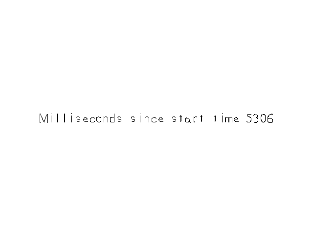

Advanced Timers

Last Updated: Jun 8th, 2025
We did a very basic timer in the previous tutorial, now it's time to make one that is a little more practical.class LTimer
{
public:
//Initializes variables
LTimer();
//The various clock actions
void start();
void stop();
void pause();
void unpause();
//Gets the timer's time
Uint64 getTicksNS();
//Checks the status of the timer
bool isStarted();
bool isPaused();
private:
//The clock time when the timer started
Uint64 mStartTicks;
//The ticks stored when the timer was paused
Uint64 mPausedTicks;
//The timer status
bool mPaused;
bool mStarted;
};
Here is our timer class with more of the functionality you would expect in a timer. It can start, stop, pause, and unpause. It has functions to check whether it's started or paused and the ability to get its time in nanoseconds (more on that later).
We have data members to store the start time of the timer, the time at moment of pausing, and some flags for the timer status.
We have data members to store the start time of the timer, the time at moment of pausing, and some flags for the timer status.
//LTimer Implementation
LTimer::LTimer():
mStartTicks{ 0 },
mPausedTicks{ 0 },
mPaused{ false },
mStarted{ false }
{
}
Here we are again initializing variables with constructor initializer lists because our constructor isn't doing anything but assigning some values. Remember, if you code in a way that's nice to the compiler, the compiler will be nice to you with optimizations.
void LTimer::start()
{
//Start the timer
mStarted = true;
//Unpause the timer
mPaused = false;
//Get the current clock time
mStartTicks = SDL_GetTicksNS();
mPausedTicks = 0;
}
void LTimer::stop()
{
//Stop the timer
mStarted = false;
//Unpause the timer
mPaused = false;
//Clear tick variables
mStartTicks = 0;
mPausedTicks = 0;
}
As you can see, starting the timer resets the status flags, resets the pause time, and grabs the current application time with SDL_GetTicksNS.
When we stop the timer, we just reset the variables to where they were when the timer was constructed.
SDL_GetTicksNS gets the application time in nanoseconds as
opposed to milliseconds. Nanoseconds are a billionth of a second so it's more precise. This also means 1 second is 1,000,000,000, 10 seconds is 10,000,000,000, and a minute is 60,000,000,000.When we stop the timer, we just reset the variables to where they were when the timer was constructed.
void LTimer::pause()
{
//If the timer is running and isn't already paused
if( mStarted && !mPaused )
{
//Pause the timer
mPaused = true;
//Calculate the paused ticks
mPausedTicks = SDL_GetTicksNS() - mStartTicks;
mStartTicks = 0;
}
}
When we pause the timer, we want to first make sure it's actually running and not already paused. Then we update the status flag, store the time at moment of pausing, and reset the start time so we don't have a stray value.
void LTimer::unpause()
{
//If the timer is running and paused
if( mStarted && mPaused )
{
//Unpause the timer
mPaused = false;
//Reset the starting ticks
mStartTicks = SDL_GetTicksNS() - mPausedTicks;
//Reset the paused ticks
mPausedTicks = 0;
}
}
Unpausing consists of first checking we're in a valid state to unpause, updating the pause flag, setting the start time to be the current time minus time at pausing. This makes sense because say you paused at 10,000,000,000 after starting at 5,000,000,000 (a 5 second difference), if were
to unpause at 30,000,000,000 you would want the new start time to be at 25,000,000,000 to keep that 5 second time difference.
And we also reset the pause time for the sake of not having any stray values.
And we also reset the pause time for the sake of not having any stray values.
Uint64 LTimer::getTicksNS()
{
//The actual timer time
Uint64 time{ 0 };
//If the timer is running
if( mStarted )
{
//If the timer is paused
if( mPaused )
{
//Return the number of ticks when the timer was paused
time = mPausedTicks;
}
else
{
//Return the current time minus the start time
time = SDL_GetTicksNS() - mStartTicks;
}
}
return time;
}
When getting the time, we first check if we even started the timer. If not, we just end up returning 0. If the timer is paused, we return the time at the moment of pausing. If the timer is running, we return the current time minus the start time.
//Application timer
LTimer timer;
//In memory text stream
std::stringstream timeText;
Before we head into the main loop we declare our timer.
//Get event data
while( SDL_PollEvent( &e ) == true )
{
//If event is quit type
if( e.type == SDL_EVENT_QUIT )
{
//End the main loop
quit = true;
}
//Reset start time on return keypress
else if( e.type == SDL_EVENT_KEY_DOWN )
{
//Start/stop
if( e.key.key == SDLK_RETURN )
{
if( timer.isStarted() )
{
timer.stop();
}
else
{
timer.start();
}
}
//Pause/unpause
else if( e.key.key == SDLK_SPACE )
{
if( timer.isPaused() )
{
timer.unpause();
}
else
{
timer.pause();
}
}
}
}
In the event loop with start/stop the timer with enter and pause/unpause it with the space bar.
//Update text
timeText.str("");
timeText << "Milliseconds since start time " << ( timer.getTicksNS() / 1000000 );
SDL_Color textColor{ 0x00, 0x00, 0x00, 0xFF };
gTimeTextTexture.loadFromRenderedText( timeText.str().c_str(), textColor );
//Fill the background
SDL_SetRenderDrawColor( gRenderer, 0xFF, 0xFF, 0xFF, 0xFF );
SDL_RenderClear( gRenderer );
//Draw text
gTimeTextTexture.render( ( kScreenWidth - gTimeTextTexture.getWidth() ) / 2.f, ( kScreenHeight - gTimeTextTexture.getHeight() ) / 2.f );
//Update screen
SDL_RenderPresent( gRenderer );
We want the time in milliseconds, so when we create the string text we divide the nanoseconds by 1,000,000. After we create the text texture, we then render the time text to the screen.